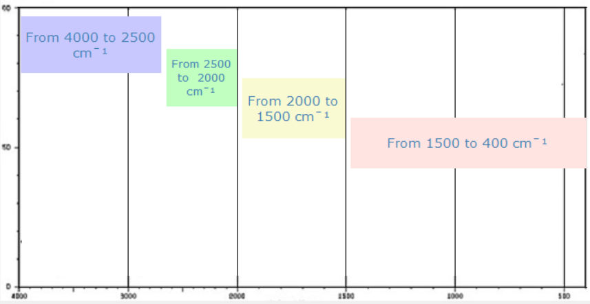

Four main regions of an IR-Spectrum
The bands are attributed to single bonds to hydrogen e.g. C-H,O-H and N-H. The bands of O-H and N-H are broad due to hydrogen bonds.
The bands are attributed to triple bonds e.g. C=C, C=N and X=Y=Z
The bands are attributed to double bonds e.g. C=C, C=O and C=N The bonds of an aromatic ring appear at lower frequencies, due to the increased single bond character of the conjugated system.
This is the fingerprint region. This region is unique for every compound. It includes stretching, scissoring, bending and rotating vibrations. It is very hard to interpret this data.
